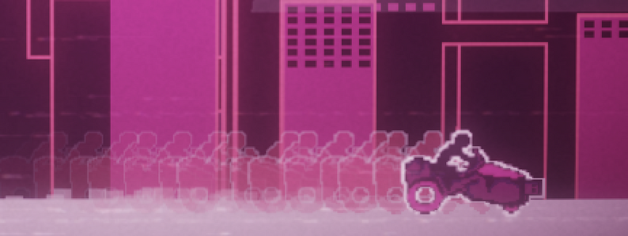

01
DAY 1
The first day focused on establishing the core concept and identifying the main gameplay loop. I worked on defining what made the game fun while keeping the scope manageable for the jam.
Mashup Game Jam 2025
Hyperwave Drive was created for the Mashup Game Jam 2025, a game jam focused on combining different ideas and mechanics into a single game.
The project was developed as a jam game with a focus on creating a complete playable experience while working within the limited time and design constraints of the event.



Hyperwave Drive was created during the Mashup Game Jam 2025. The project was built around combining its core gameplay ideas into a cohesive experience while working within the limited timeframe of a game jam.
My main focus throughout development was turning the initial concept into a playable game while balancing gameplay, presentation, and the overall player experience.
The project gave me an opportunity to experiment with game mechanics, visual presentation, and audio while rapidly iterating toward a finished build.
The first day focused on establishing the core concept and identifying the main gameplay loop. I worked on defining what made the game fun while keeping the scope manageable for the jam.
Development moved into implementing the game's primary mechanics. The focus was on getting the core systems working before spending significant time on presentation and polish.
With the basic gameplay functioning, I began expanding the systems and connecting the individual mechanics together into a more complete experience.
I focused on improving the game's presentation and making the core gameplay feel more responsive. Visual and audio elements were also developed alongside the gameplay.
The fifth day was focused on iteration and refinement. I tested the game repeatedly and addressed issues that affected clarity, pacing, and the overall experience.
Development shifted toward final polish. I refined visual details, adjusted gameplay elements, and worked on making the final build feel more cohesive.
The final day was dedicated to finishing the build, fixing remaining issues, and preparing the game for submission and judging.
Visual development was an important part of Hyperwave Drive, especially given that the project received a #4 ranking in the Art category during judging.
The visual direction was developed alongside the gameplay, allowing the presentation to reinforce the game's identity while remaining achievable within the jam's limited development time.


The technical development focused on turning the game's core concept into a functional and responsive gameplay experience.
Working within a game jam required prioritizing the systems that had the greatest impact on the player experience. Development was centered around quickly implementing mechanics, testing them in context, and making adjustments as the game evolved.
Iteration was an important part of the development process. With the limited timeframe of the jam, I had to continually evaluate which changes would have the biggest impact on the finished game.
Testing helped identify areas where gameplay, presentation, and overall clarity could be improved. These changes were incorporated throughout development rather than being left entirely until the end of the project.
Hyperwave Drive was submitted to the Mashup Game Jam 2025 and received the following results during judging:
The project gave me experience working through a complete game development cycle under a strict deadline, from the initial concept and implementation through iteration, polish, and final submission.